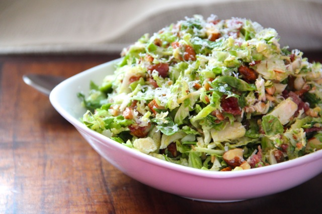

Chopped Brussels Sprouts Salad

Description
This is an easy side dish!
Don't be scared of raw Brussels sprouts - they are delicious!
Ingredients
- 1 shallot, minced
- 1/4 cup cider vinegar
- 1/4 cup sunflower seed oil
- 2 tablespoons Dijon mustard
- 1/2 teaspoon honey
- 1/2 teaspoon salt
- 1/4 teaspoon ground black pepper
- 6 cups Brussels sprouts, trimmed, halved, and sliced
- 2 Gala apples, cored and thinly sliced
- 1/2 cup dried cranberries
- 1/3 cup sliced almonds
- 1/3 cup raw sunflower seed kernels
- 1/3 cup shelled, raw pumpkin seeds
Steps
- Whisk shallot, vinegar, oil, Dijon mustard, honey, salt, and pepper together in a small bowl.
- Place Brussels sprouts, apples, cranberries, almonds, sunflower seeds, and pumpkin seeds in a bowl; pour vinegar mixture over and toss to combine.